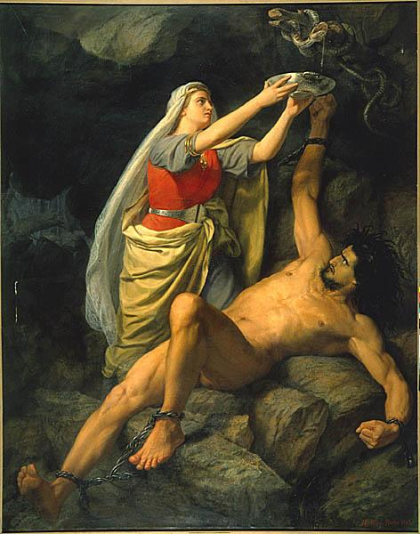

Loke
Loke version 1.2.
Hallelujamusik track 01.
Musik og tekst er skrevet 2011
- 2012 af
Lasse Steen Bohnstedt.
Visse rettigheder forbeholdt. *)
Loke ligger bundet, han tror, han har vundet.
"Ansøger" om stillingen som hersker over Himlene. Overdriver måske sit CV lidt.
Audio
Pr. 2. juni 2012 har jeg besluttet, at nu er første demo af "Loke" færdig!
Der er masser af detaljer, jeg kunne pille i endnu, men man er også nødt til at sige stop på et tidspunkt - slippe.
Jeg synes ret godt om resultatet, det er efterhånden kommet rimelig tæt på det, jeg oprindeligt havde i hovedet, da jeg den 7. juni 2011 sad og opfandt de første strofer i bussen på vej til arbejde.
Med andre ord: Jeg har været cirka et år om at lave demoen færdig. Grunden til, at jeg har været så lang tid om det, er især, at jeg måske højst har rodet en halv time om dagen med det - og bestemt ikke hver dag.
Teksten har været igennem nogle ændringer, så det hedder nu version 1.2. Derfor (og af andre årsager) er sangstemmen optaget op til tre gange, kun ganske lidt har overlevet fra første forsøg.
Du kan enten lytte til Loke i browseren eller downloade mp3 filen:
Nederst på siden "Historik" kan du læse mere om denne sidste udgave, blandt andet detaljer om mixet.
Der er masser af detaljer, jeg kunne pille i endnu, men man er også nødt til at sige stop på et tidspunkt - slippe.
Jeg synes ret godt om resultatet, det er efterhånden kommet rimelig tæt på det, jeg oprindeligt havde i hovedet, da jeg den 7. juni 2011 sad og opfandt de første strofer i bussen på vej til arbejde.
Med andre ord: Jeg har været cirka et år om at lave demoen færdig. Grunden til, at jeg har været så lang tid om det, er især, at jeg måske højst har rodet en halv time om dagen med det - og bestemt ikke hver dag.
Teksten har været igennem nogle ændringer, så det hedder nu version 1.2. Derfor (og af andre årsager) er sangstemmen optaget op til tre gange, kun ganske lidt har overlevet fra første forsøg.
Du kan enten lytte til Loke i browseren eller downloade mp3 filen:
Nederst på siden "Historik" kan du læse mere om denne sidste udgave, blandt andet detaljer om mixet.
Nodeark
Jeg har ikke gidet skrive noder til Loke, og det kommer der nok aldrig.
Både melodi, tekst og grundarrangement blev til i juni/juli 2011 og har ikke ændret sig afgørende siden. Men i al den tid har det færdige produkt kun eksisteret i hovedet på mig ;-)
Nu, hvor demoen er klar og lagt op, har jeg endelig fået mig taget sammen til at skrive becifringerne ned!
Du kan hente dem her.
Akkorderne har morphet lidt indimellem, men er faktisk stort set vendt tilbage til udgangspuktet.
Både melodi, tekst og grundarrangement blev til i juni/juli 2011 og har ikke ændret sig afgørende siden. Men i al den tid har det færdige produkt kun eksisteret i hovedet på mig ;-)
Nu, hvor demoen er klar og lagt op, har jeg endelig fået mig taget sammen til at skrive becifringerne ned!
Du kan hente dem her.
Akkorderne har morphet lidt indimellem, men er faktisk stort set vendt tilbage til udgangspuktet.
Baggrund
Som så mange andre danskere stiftede jeg først bekendtskab med Loke i
Peter Madsens "Valhalla" tegneserier:
Han er en dum skid, som tænker på sig selv først, ikke går af vejen for en practical joke, og som griber enhver chance for at tilrane sig magt og ting.
Som voksen har jeg læst lidt op på den del af mytologien, som har overlevet til vore dage; den viser sig at passe rimelig godt med Peter Madsens figur - dog skinner det visse steder igennem, at munkene, som nedskrev historierne, nok har syntes at Loke mindede en del om Lucifer. Hans noget uvisse herkomst (ase eller jætte?) såvel som navnet Loke, der ligger tæt op af "lue" (flamme), kan have bidraget til den idé.
Men der er en anden side af Loke, som ligger under overfladen. I "Reginsmál" hvor han henholdsvis dræber og fanger dværgene Odder og Gedde, opfinder han samtidig - uforvarende - jagt og fiskeri, og er således kulturskaber, ikke ulig grækernes Prometheus. Det er muligt, at det laaangt tilbage var den originale Loke.
Det er i hvert fald usandsynligt, at vikingerne så Loke som ond - de havde ikke vores kristne, dualistiske referenceramme. Men han har sandsynligvis været den gud, man har bedt om lykke, når man skulle være veltalende, eller når man skulle gøre noget gedulgt; tyveri, snigmord, osv. Og i kraft af hans ham- og kønsskifteri har han nok været guden for folk, der levede på samfundets kant.
Min Loke er ond.
Om han er blevet det hen ad vejen, eller har været det hele tiden; om han har ændret sig på grund af de ting, han selv har gjort, eller på grund af det, der er gjort imod ham og hans søn(ner)... det er ikke til at sige.
Men han er ond, og han er ond i sulet!
P.S. Det syrebad, som Loke får til sidst i sangen, er vist nok ikke rigtig syre. Jeg tror, det er tårer.
Han er en dum skid, som tænker på sig selv først, ikke går af vejen for en practical joke, og som griber enhver chance for at tilrane sig magt og ting.
Som voksen har jeg læst lidt op på den del af mytologien, som har overlevet til vore dage; den viser sig at passe rimelig godt med Peter Madsens figur - dog skinner det visse steder igennem, at munkene, som nedskrev historierne, nok har syntes at Loke mindede en del om Lucifer. Hans noget uvisse herkomst (ase eller jætte?) såvel som navnet Loke, der ligger tæt op af "lue" (flamme), kan have bidraget til den idé.
Men der er en anden side af Loke, som ligger under overfladen. I "Reginsmál" hvor han henholdsvis dræber og fanger dværgene Odder og Gedde, opfinder han samtidig - uforvarende - jagt og fiskeri, og er således kulturskaber, ikke ulig grækernes Prometheus. Det er muligt, at det laaangt tilbage var den originale Loke.
Det er i hvert fald usandsynligt, at vikingerne så Loke som ond - de havde ikke vores kristne, dualistiske referenceramme. Men han har sandsynligvis været den gud, man har bedt om lykke, når man skulle være veltalende, eller når man skulle gøre noget gedulgt; tyveri, snigmord, osv. Og i kraft af hans ham- og kønsskifteri har han nok været guden for folk, der levede på samfundets kant.
Min Loke er ond.
Om han er blevet det hen ad vejen, eller har været det hele tiden; om han har ændret sig på grund af de ting, han selv har gjort, eller på grund af det, der er gjort imod ham og hans søn(ner)... det er ikke til at sige.
Men han er ond, og han er ond i sulet!
P.S. Det syrebad, som Loke får til sidst i sangen, er vist nok ikke rigtig syre. Jeg tror, det er tårer.
Tekst
|
 Loke och Sigyn af Maarten Eskil Winge, 1890 |
Kommer det blod fra mit eget kød?
Hvad laver jeg i det her hul?
Er det genskæret fra mit sejrsbål?
Næh, se nu hvem, der kommer der:
Frelseren selv og hans frelsens hær!
Du får ikke solgt noget her
Du' et får i fåreklær!
For jeg har ledt dine børn i syndens sikre favn
Og jeg har lært dem at erstatte kærlighed med savn
Og jeg skænkede dem ilden, og jeg tog mig betalt
Og de stolede kun på mig, da det virkelig gjaldt!
Sæt mig nu løs, tøs!
for ulven skal ha' sin nam nam!
Jeg ku' kun vinde krigen,
for jeg er helt uden skam!
I min helteham
stikker jeg Verden i brand!
Du har jo tabt, det ser du nu
Der' ingen grund, der er ingen Gud
Der' kun det lort, vi selv skider ud
Så tør dine øjne tøs, lad vær' og tud'!
For jeg har taget dine børn, det var næsten for nemt
Og jeg brugte dem grundigt, før du fik dem igen
Og jeg skænkede dem Månen, og jeg tog mig betalt
Og de stolede kun på mig, da det virkelig gjaldt!
Ja jeg sad på min trone
og så, at alting var ondt!
Alle djævlene vrælede,
mens rosset det blev rykket rundt!
I sygeste bad ass stil
styrer jeg festen for vildt!
For jeg har dræbt dine børn!
Ja jeg har dræbt dine børn, de stod stille som lam!
Mens de skrev tykke bøger om, at du og jeg er den samme!
Og jeg lovede dem Himlen, og jeg tog mig betalt
Og de stolede kun på mig, da det virkelig gjaldt!
Så nu gi'r du mig din plads
i Himlens slot!
Nej, jeg vil ikke ha' din tilgivelse!
Du kan stikke den skråt op!
De gode græder snot
De selvfede tror, det går skidegodt!
Sæt mig fri, sæt mig fri!
Jeg drak deres blod som vin
mens gnomerne skreg af grin!
(crash)
Hvor blev du af? ...
Inspiration
Det er ikke en skam at stjæle, så længe man stjæler fra de bedste.
Men hvis jeg selv skal sige det, så er Loke et rimelig originalt værk -
dvs at jeg ikke har hugget særlig meget!
Melodi
- Stemningen i trommerne minder meget om den i "Bone Machine" med The Pixies. Jeg opdagede på et tidspunkt, at der var en vis lighed, så jeg arbejdede videre i den retning :)
- I starten havde jeg meget "Want" med the Cure i hovedet, ikke så meget til sidst.
- Jeg tænkte en del på "Monster" med The Automatic i forbindelse med indspilningen af sangstemmen. Er lidt usikker på, om det kan høres eller ej.
- Der er et vist melodisk sammenfald med både Beatles' "I Want You/She's so Heavy" og "Hey!" med The Pixies - det er rent tilfældigt, har først lagt mærke til det sent.
-
Da sangen var stort set færdig, mens jeg eksperimenterede heftigt med mixet,
faldt jeg tilfældigt over den amerikanske
alternativ rock gruppe
"OK Go" på YouTube.
Jeg blev smaskforelsket i deres smadrede lyd!
Det er ganske åbenlyst, at jeg har ladet mig inspirere af deres udtryk.
Rent praktisk har jeg i perioder haft studieudgaven af "Needing/Getting" og den seneste udgave af "Loke" til at køre på repeat på min iPod, for at kunne sammenligne.
Tekst
- Leonard Cohens religiøse tekstunivers fascinerer mig meget, og temaet i Loke er delvist inspireret af "Avalanche", som er en af mine absolutte favoritsange.
- Ulven, der skal have sin nam nam, er et hip til Peter Bellis "Ulven Peter" :-)
- Månen som billede på ondskab og destruktion optræder i C. S. Lewis' "Ransom" trilogi.
- Og til sidst: Der er en obskur henvisning til en David Bowie sang i teksten - god jagt!
Historik
Klik her
for at se og høre "work-in-progress" udgaver af Loke
og diverse tekster, tanker og information -
helt tilbage fra den første idé, over den først publicerede version 1.0 tekst
og til den demo, jeg har lagt op.
2012-06-15
"Loke" version 1.2